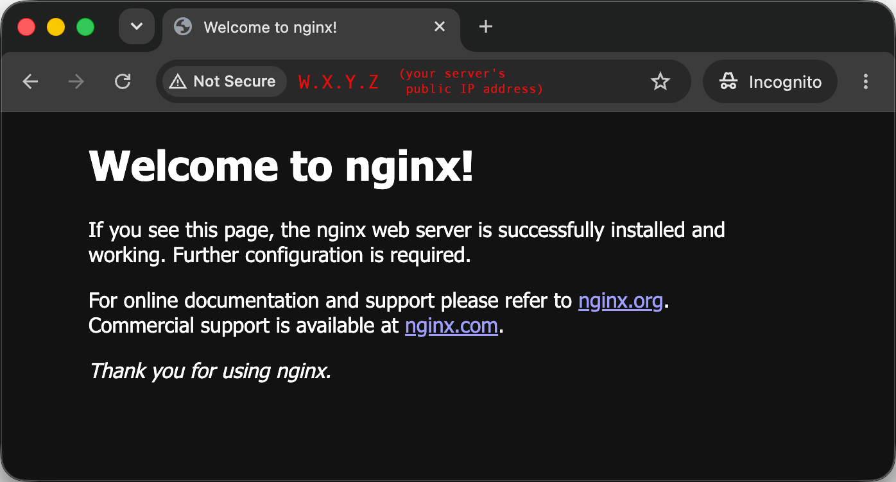
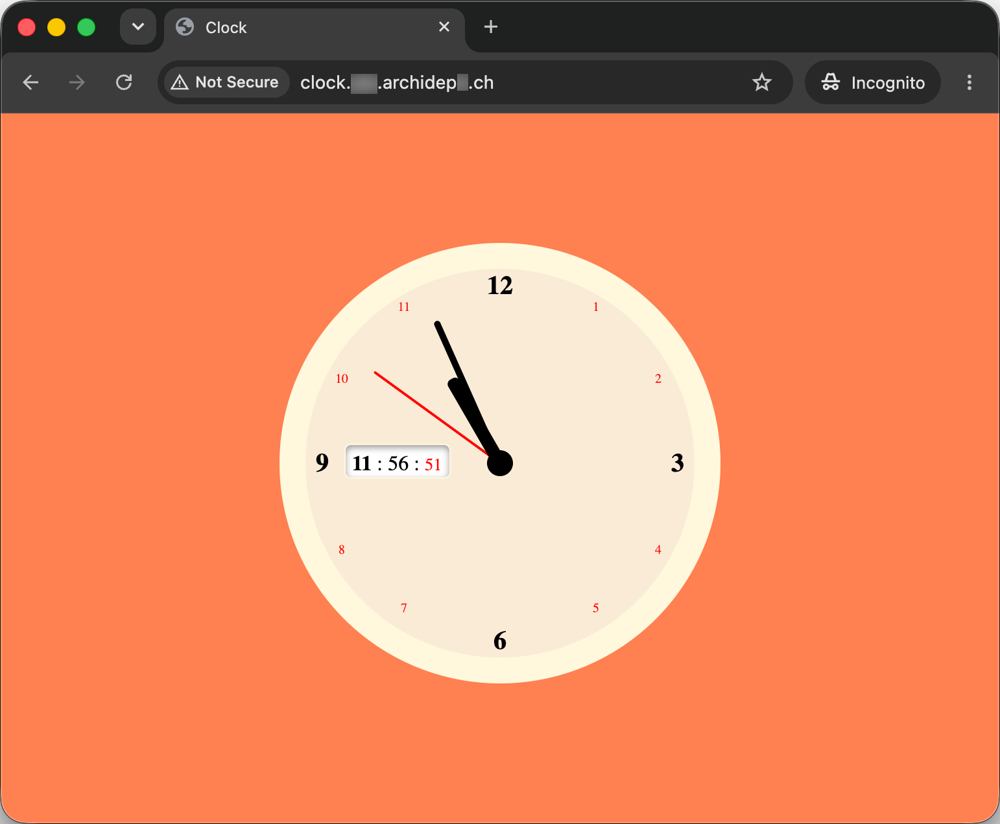

Connect to your cloud server with SSH for this exercise.
Deploy a static site with nginx
The goal of this exercise is to deploy a static website (only HTML, JavaScript and CSS) with nginx. It is a simple first use of nginx: it only serves files, with no application behind it to reverse proxy to. Once you know how to configure nginx for something this simple, you will use it to continue improving the basic deployment of Guess It.
On this page
Table of contents
 Legend
Legend
Parts of this exercise are annotated with the following icons:
-
 A task you MUST perform to complete the exercise
A task you MUST perform to complete the exercise
-
 Optional step that you may perform to make sure that
everything is working correctly, or to set up additional tools that are not required but can
help you, or optional extra exercises to explore the topic further
Optional step that you may perform to make sure that
everything is working correctly, or to set up additional tools that are not required but can
help you, or optional extra exercises to explore the topic further
-
 Advanced tips on how to go further (or
challenges!)
Advanced tips on how to go further (or
challenges!)
 The end of the exercise
The end of the exercise-
 The architecture of the software you ran or
deployed during this exercise
The architecture of the software you ran or
deployed during this exercise
-
 Troubleshooting tips: how to fix common problems you might
encounter
Troubleshooting tips: how to fix common problems you might
encounter
Requirements
This exercise assumes that you are familiar with reverse proxying and that you have completed the previous DNS configuration exercise, where you configured DNS records for your server in the domain name system.
Install nginx on the server
Connect to your server and install nginx with APT:
$> sudo apt update
$> sudo apt install nginxAPT starts nginx right away, through systemd, and nginx starts listening on
port 80. Check that it does (sudo lets ss show the processes of other
users, such as nginx):
$> sudo ss -tlpn
State Recv-Q Send-Q Local Address:Port ... Process
LISTEN 0 511 0.0.0.0:80 ... users:(("nginx",pid=345,fd=5))
LISTEN 0 511 [::]:80 ... users:(("nginx",pid=345,fd=6))
...Check that its systemd service is running:
$> sudo systemctl status nginxVisit your server’s public IP address in a browser. You should see nginx’s welcome page:

Put the static website on the server
It is suggested that you use the provided HTML, JavaScript and CSS clock, but you could deploy any other static HTML website.
You will deploy it in /srv/clock, as you deployed Guess It in /srv/guessit.
nginx reads the files of the sites it serves as the www-data user, as the
first line of its main configuration file says:
$> head -n 1 /etc/nginx/nginx.conf
user www-data;Create the directory, give it to yourself and to the www-data group, and close
it to every other user (replace jde with your Unix username):
$> sudo mkdir /srv/clock
$> sudo chown jde:www-data /srv/clock
$> chmod 750 /srv/clock
$> ls -ld /srv/clock
drwxr-x--- 2 jde www-data 4096 Nov 19 10:12 /srv/clockYou own the directory (rwx), so you can deploy in it without sudo. The
www-data user, the only member of the www-data group, can read and enter it
(r-x), but not change it. Every other user can do nothing with it (---).
This is what you did for the guessit user when you let Guess It read its
code.
Your home directory would not do: it is closed to other users (drwxr-x---),
and www-data is one of them.
Still on your server, clone the following repository into the directory: https://github.com/ArchiDep/static-clock-website
$> git clone https://github.com/ArchiDep/static-clock-website.git /srv/clockMake sure the files are there:
$> ls /srv/clock
index.html README.md script.js style.css Choose the name of the site
The clock gets a name of its own: clock. followed by the hostname you noted
in the DNS exercise. For example, if your hostname is
jde.archidepN.ch, the clock will be at clock.jde.archidepN.ch.
You do not need to add a DNS record for it. Your wildcard record, *.jde,
already points every name under your hostname to your server.
Every site you deploy on your server from now on gets a name of its own in the same way, so that each name stands for one site.
Create an nginx configuration file to serve the website
Create an nginx configuration file for the website. You may name the file
clock and put it in nginx’s /etc/nginx/sites-available directory. You can do
that with nano or Vim. You will need to use sudo as that directory is only
writable by root.
You can add the .conf extension to the file or not, as you wish. Nginx does
not need its configuration to have a particular extension.
Take the static configuration example from the course and put it in the file. You must modify it to:
- Use the name you chose for the site, such as
clock.jde.archidepN.ch. This is done by customizing nginx’sserver_namedirective in yourserverblock. - Serve the files in the repository you just cloned. This is done by customizing
nginx’s
rootdirective.
Read How nginx processes a request and Serving Static Content section of the nginx Beginner’s Guide if you want to know more.
Enable the nginx configuration
By default, configurations stored in the sites-available directory are
available, but not enabled: the main configuration file includes
sites-enabled, but not sites-available.
To enable a configuration file, the convention is to create a symbolic link in
sites-enabled, which points to the actual configuration file in
sites-available. This allows you to work on your configuration for a while
before enabling it.
Enable the clock configuration by creating the correct symbolic link:
$> sudo ln -s /etc/nginx/sites-available/clock /etc/nginx/sites-enabled/clockThe -s option makes the ln (link) command create a symbolic
link, i.e. a simple pointer to a file that resides in another directory. Without
the -s option, it would create a hard link.
Make sure the symbolic link points to the correct file:
$> ls -l /etc/nginx/sites-enabled/clock
lrwxrwxrwx 1 root root 32 Nov 19 10:20 /etc/nginx/sites-enabled/clock -> /etc/nginx/sites-available/clock Reload the nginx configuration
Nginx does not automatically reload its configuration files when they change.
First, you should check whether the changes you have made are valid. The nginx -t command (as in test) loads all the nginx configuration (including files
added with include) and checks that they are valid:
$> sudo nginx -t
nginx: the configuration file /etc/nginx/nginx.conf syntax is ok
nginx: configuration file /etc/nginx/nginx.conf test is successfulIf an error occurs here, you may have made a mistake in the configuration. See Troubleshooting for the most common errors.
Nginx reloads its configuration when it receives the HUP
signal. You could find the process ID of the nginx master
process and send the signal with kill -s HUP <ID>. The nginx command does it
more simply, with its -s option, which sends a signal to the master
process: sudo nginx -s reload.
You will not even need that. The systemd service of nginx runs that same nginx -s reload command when you reload it, so you can reload nginx the same way you
manage Guess It, or any other service:
$> sudo systemctl reload nginxIf the command indicates no errors, nginx should have reloaded its configuration. This is how you will reload nginx from now on.
Do not confuse it with sudo systemctl restart nginx, which stops nginx and
starts it again. A restart closes the connections in progress, and if the new
configuration has an error, nginx does not start again: every site it serves is
down. A reload keeps nginx running, and if the new configuration has an error,
nginx keeps the old one.
See it in action
Visit the name of the site in your browser, e.g. http://clock.jde.archidepN.ch
(with your own hostname after clock.), and you should see the clock. The
address has no port: the browser connects to port 80 (the default port for
insecure HTTP), where nginx listens.

Now visit your hostname without clock. in front of it, e.g.
http://jde.archidepN.ch. You get nginx’s welcome page instead, because none of
your configurations has that name. nginx answers it with its default site, the
default configuration in /etc/nginx/sites-enabled.
Guess It is still at http://jde.archidepN.ch:3000, as before. nginx is not
involved: the browser connects to Guess It directly, on port 3000.
Optional: hide the Git repository for security
Your clone contains a .git directory, where Git keeps the history of the
repository, and nginx serves it like any other file. Try it: visit
/.git/config on the clock’s address, e.g.
http://clock.jde.archidepN.ch/.git/config.
The clock’s repository is public anyway, so it’s not a security concern in this particular exercise. But the repository of another site could hold something you do not want to publish, such as an old version of a file with a password in it.
To refuse such requests, add this location block inside the server block of
your configuration:
# Refuse requests for the Git repository.
location ~ /\.git {
deny all;
}Test the configuration and reload it as above. The same address now gives a 403 Forbidden error.
What have I done?
You have deployed a static website: files that nginx sends to the browser unchanged. Nothing of the site runs on your server. The browser runs the clock’s JavaScript itself.
nginx listens on port 80, the default port of HTTP. A browser connects to it when the address has no port, which is why the clock’s address needs none. systemd started nginx when you installed it, and starts it again whenever the server boots, as it does Guess It.
Only one process can listen on port 80, but nginx can serve several sites on
it. The browser sends the name of the site in the Host header of its request,
as you did yourself when you talked HTTP to Google. nginx serves the
site whose server_name is that name, and its default site when no
configuration has it.
The DNS sends every name under your hostname to the same address, thanks to your wildcard record. It cannot tell the sites apart: nginx does, by name. A new site needs a configuration with a new name, and no new DNS record.
A configuration in sites-available does nothing until a symbolic link in
sites-enabled, which nginx includes, points to it. nginx reads a changed
configuration only when told to reload it: the HUP signal makes it read its
configuration again without stopping. nginx -t checks a configuration before
you do that.
nginx reads the files of the site as the www-data user. /srv/clock belongs
to the www-data group, so nginx can read the site but not modify it, while you
own it and deploy it as yourself.
Several problems from the list of improvements to the basic deployment are still unsolved. One of them is that Guess It still needs its port in the address, since nginx has nothing to do with it. Guess It is not a set of files nginx can send: it is a program that builds each page when it is asked for it. Serving it on port 80, beside the clock, will need something more.
Architecture
This is a simplified architecture of the main running processes and communication flow at the end of this exercise. Step through the diagram to see what happens when a browser requests the clock.
In this diagram, a browser reaches the clock by a name of its own, clock.jde.archidep2.ch, with no port in the address. nginx listens on port 80 and sends the browser the files of the site. systemd, the init process, started nginx when the server booted.
systemd, the init process, started nginx when the server booted. nginx listens on port 80, with the configuration of the clock enabled. Your wildcard DNS record, *.jde, points clock.jde.archidep2.ch to your server’s public IP address.
Someone opens a browser on their computer.
They type the clock’s address into the browser, with no port. The browser looks up clock.jde.archidep2.ch in the DNS, which answers with your server’s public IP address, from your wildcard record.
With no port in the address, the browser connects to port 80, the default port of HTTP, at your server’s public IP address. nginx is listening there.
The browser sends an HTTP request for the home page over the connection, with the name it was given in its Host header, and waits for the answer.
nginx works: it picks the configuration whose server_name is the name in the Host header, and reads /srv/clock/index.html from the disk, as the www-data user.
The file travels back over the connection to the browser, unchanged.
The page needs a stylesheet and a script. The browser asks nginx for them over the same connection, and waits again.
nginx works again, reading style.css and script.js from /srv/clock.
The two files travel back to the browser, unchanged.
The browser works, displaying the page and running the clock’s JavaScript, which shows the time. Nothing of the clock runs on your server.
Note
Note that this diagram only shows the processes involved in this exercise, ignoring Guess It, which is still running on the server.
 Where is everything?
Where is everything?
These are the files and directories of your server that matter for this deployment.
| Path | What it is | What you did | Who uses it |
|---|---|---|---|
/etc/nginx/sites-available/clock new |
The configuration of the clock: its name and where its files are | Wrote it with sudo nano |
nginx, through the link in sites-enabled |
/etc/nginx/sites-enabled/clock new |
A symbolic link to the configuration of the clock, which enables it | Created it with sudo ln -s |
nginx, which includes everything in sites-enabled |
/etc/nginx/sites-enabled/default new |
A symbolic link to nginx’s default site, its welcome page | Installed nginx with apt, which created it |
nginx, for a name that none of your configurations has |
/etc/nginx/nginx.conf new |
The main configuration of nginx, which includes sites-enabled and sets the www-data user |
Installed nginx with apt, which created it |
nginx |
/srv/clock new |
The deployment of the clock: a clone of its repository | Created it with sudo mkdir, gave it to yourself and the www-data group with sudo chown, and closed it with chmod |
You, to deploy; nginx, as www-data, to read it |
/srv/clock/index.html new |
The home page of the clock | Cloned it with git clone, with style.css and script.js |
nginx, which sends it unchanged to the browser |
/usr/lib/systemd/system/nginx.service new |
The unit file of nginx | Installed nginx with apt, which created it and enabled the service |
systemd, to start nginx when the server boots |
/var/log/nginx/error.log new |
The errors nginx has met, such as a file it could not read | Nothing, unless something went wrong | You, to find out why a page does not work |
Two directories of the file hierarchy matter most here:
/etc/nginx holds the configuration of nginx, and /var/log the logs of the
server’s programs.
You can explore all of this yourself: ls -l shows what a directory contains,
with its permissions, and cat, head and tail what a file contains, as in
the command line cheatsheet. Use sudo for what only
root can read. For example:
# The configurations nginx has enabled, and where their links point.
$> ls -l /etc/nginx/sites-enabled
# The unit systemd has loaded for nginx.
$> sudo systemctl status nginx Troubleshooting
Here’s a few tips about some problems you may encounter during this exercise.
git clone says Permission denied
/srv/clock still belongs to root, because the sudo chown command of Put
the static website on the server did not run, or had a typo. Check
who owns the directory:
$> ls -ld /srv/clockIt must belong to your username and to the www-data group. Run the sudo chown and chmod commands again, then clone the repository again.
Do not clone with sudo to get past the error: the files would belong to
root, and you could not update them later without sudo.
nginx -t reports an [emerg] error with a file and a line number
For example:
... [emerg] ... invalid number of arguments in "root" directive in /etc/nginx/sites-enabled/clock:5
nginx: configuration file /etc/nginx/nginx.conf test failed... [emerg] ... unexpected "}" in /etc/nginx/sites-enabled/clock:15
nginx: configuration file /etc/nginx/nginx.conf test failedYour configuration has a typo. Look at the line the error names, and at the line
just before it. A missing ; at the end of a directive is the most common
cause: nginx reads the next line as part of the same directive, so the error
names the line after the typo.
nginx -t says open() "/etc/nginx/sites-enabled/clock" failed or Too many levels of symbolic links
The symbolic link in sites-enabled points to a file that does not exist, or to
itself, because its target was mistyped or was not a full path. Look at where it
points, after the arrow:
$> ls -l /etc/nginx/sites-enabledIt must point to /etc/nginx/sites-available/clock. If it does not, remove the
link (this removes only the link, not your configuration) and create it again
with the ln -s command of Enable the nginx configuration:
$> sudo rm /etc/nginx/sites-enabled/clock [emerg] could not build server_names_hash, you should increase server_names_hash_bucket_size
If you get an error about server_names_hash_bucket_size, it may be because
your domain name (the value of your server_name directive) is too long for
nginx’s default settings.
In that case, edit the main nginx configuration with sudo nano /etc/nginx/nginx.conf and add the following line in the http section:
server_names_hash_bucket_size 256; systemctl reload nginx says Job for nginx.service failed
Your new configuration has an error, so nginx did not load it. It keeps serving
the configuration it had before. Run sudo nginx -t to see the error, fix it,
then reload nginx again.
My changes to the configuration have no effect
If you have reloaded nginx and your changes to
/etc/nginx/sites-available/clock still have no effect, check
/etc/nginx/sites-enabled:
$> ls -l /etc/nginx/sites-enabledIf clock has no arrow after it, it is a copy of your configuration, not a
symbolic link, and nginx reads the copy. Remove the copy and create the link with
the ln -s command of Enable the nginx configuration:
$> sudo rm /etc/nginx/sites-enabled/clock I see nginx’s welcome page instead of the clock
nginx has no enabled configuration with the name in your browser’s address bar, so it answers with its default site. Check that:
- The address is the name of the site, with
clock.in front of your hostname. - The
server_namedirective in/etc/nginx/sites-available/clockis exactly that name, and ends with;. Without the;, nginx reads the words of the next line as more names for the site, andnginx -tonly prints a[warn]about a server name thathas suspicious symbols. - The symbolic link
/etc/nginx/sites-enabled/clockexists and points to your configuration (ls -l /etc/nginx/sites-enabled). - You have reloaded nginx’s configuration since your last change.
The browser shows a security error, or the address starts with https://
Some browsers try HTTPS first when you type a name without http://. Nothing
listens on port 443, the port of HTTPS, on your server yet. Type the address in
full, with http:// in front of it, e.g. http://clock.jde.archidepN.ch.
The nginx configuration is correct but I get an error page in the browser
If your nginx configuration is syntactically correct (i.e. sudo nginx -t shows
no error) but you still get an error page in the browser, you can take a look at
the nginx error log to see if it helps identify the issue:
$> sudo tail /var/log/nginx/error.logAlso take a look at the following subsections depending on the error you see in your browser.
403 Forbidden
If you get a 403 Forbidden error, it usually means that nginx has insufficient
permissions to access the directory you have specified with the root directive
(or the index.html file in that directory). The error log says so:
... [error] ... "/srv/clock/index.html" is forbidden (13: Permission denied), ...Check the permissions of the directory:
$> ls -ld /srv/clock
drwxr-x--- 3 jde www-data 4096 Nov 19 10:14 /srv/clockIts group must be www-data, and the group’s permissions r-x. If they are
not, run the sudo chown and chmod commands of Put the static website on the
server again.
404 Not Found
If you get a 404 Not Found error page, it usually means nginx cannot find a file
to serve (e.g. the index.html page) in the directory you have specified with
the root directive. The error log says which file it looked for:
... [error] ... "/srv/clok/index.html" is not found (2: No such file or directory), ...Are you sure that the value of your root directive is correct? Does that
directory actually exist?